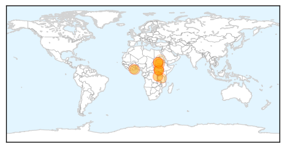

Cholera
30-Day Web Trend
0 alerts, 0 warnings

30-Day Twitter Trend
1 alerts, 0 warnings

Article Locations
Article Confidences

Top Articles:
- 0.998
- Cholera kills 32 in S’Sudan, education key to stemming outbreak, says UN
- 0.997
- UN: cholera outbreaks can be controlled thanks to vaccines, water and sanitation
- 0.996
- Cholera Claims 58 Lives
- 0.993
- Bechem Records 2 Cholera Deaths
- 0.987
- UNICEF to launch sensitization campaign to curb cholera
- 0.983
- Sudan Vision Daily
- 0.980
- World health groups ring alarm bell over threat of cholera in South Sudan
- 0.949
- Cholera outbreaks can be controlled: WHO
- 0.941
- Cholera cases rise
- 0.931
- Cholera has killed 32 people in South Sudan
- 0.910
- Children make up one fifth of cholera deaths in South Sudan: UNICEF
- 0.621
- Tanzania: Services in Nyarugusu refugee camp ‘stretched beyond their limits’
- 0.567
- Civilian killed inside South Sudan UN compound
- 0.561
- South Sudan: UN Mission deplores killing of civilian in Organization compound
- 0.550
- South Sudan: UN Mission deplores killing of civilian in Organization compound
- 0.515
- South Sudan: UN Mission deplores killing of civilian in Organization compound
Top Tweets:
-
No tweets found for Jul 08, 2015
MERS
30-Day Web Trend
0 alerts, 6 warnings

30-Day Twitter Trend
0 alerts, 0 warnings

Article Locations

Article Confidences

Top Articles:
- 0.999
- Middle East respiratory syndrome coronavirus (MERS-CoV) – The Philippines
- 0.999
- MERS Vaccine & Infection
- 0.999
- (News Focus) Ignorance, unique culture fuel MERS outbreak in S. Korea
- 0.998
- The Scientist Magazine®
- 0.998
- Cebu News, The Freeman Sections, The Freeman
- 0.998
- MERS-Cov Outbreak In The Philippines? Authorities Contain 2 Cases — Chinatopix
- 0.996
- Foreigner tests positive to MERS in Manila
- 0.994
- Department of Health confirms MERS in Philippines
- 0.987
- Korea reports MERS deaths; WHO details Philippines case
- 0.985
- Foreigner recovering from MERS-CoV – DOH
- 0.971
- Philstar Mobile
- 0.965
- 14 contacts of foreigner with MERS quarantined
- 0.948
- SOUTH KOREA Seoul, two more MERS victims brings toll to 35
- 0.942
- MERS-CoV Case in the Philippines is Reported to WHO
- 0.939
- Health office urges Kapampangan OFWs to cooperate in MERS-CoV screening
- 0.926
- Travel ban on Haj not under consideration
- 0.821
- Confirmatory tests on Filipina companion of foreigner positive with MERSCoV yield negative; 7 other companions still without symptoms – DOH
Top Tweets:
-
No tweets found for Jul 08, 2015